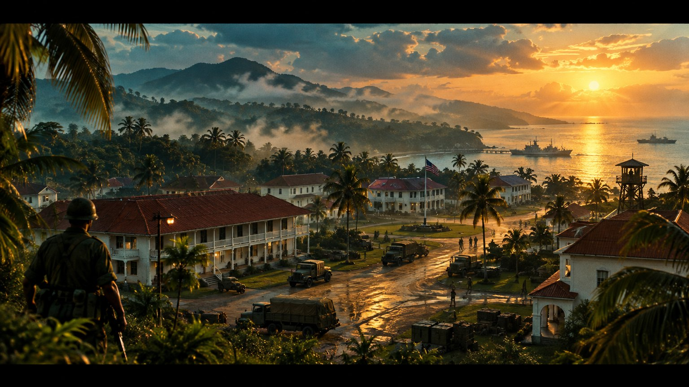
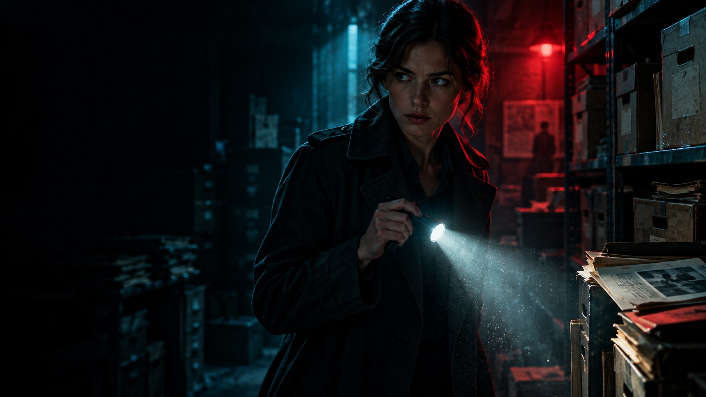
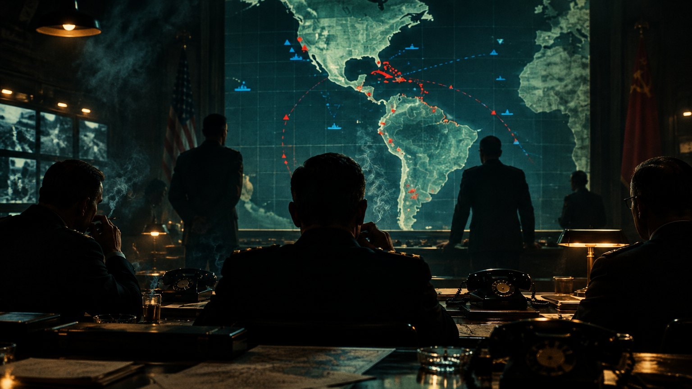
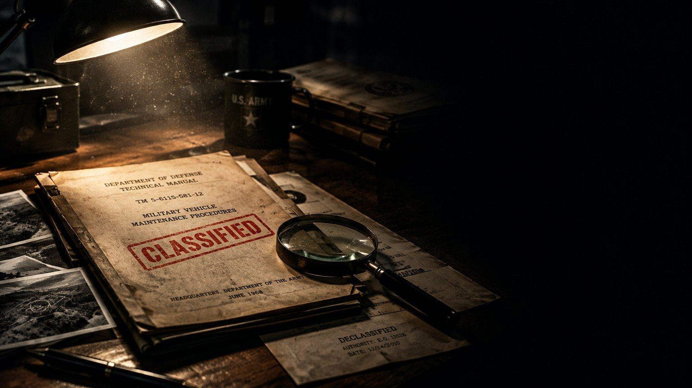

PANAMÁ, 1946
Un canal que mueve el mundo.
Una guerra que nadie declaró.
Y una escuela que marcaría a todo un continente.
BASADO EN HECHOS REALES

TRABAJO DE HISTORIA · PANAMÁ 1946 – 1984
Poder, Guerra Fría y soberanía en la antigua Zona del Canal
PRESENTAN Jesús Fuentes & Isabella Franco
Profesor: José Machuca · 12 de noviembre de 2026
EL ELENCO

PARTE I
Narrador: Jesús Fuentes
PARTE II
Narradora: Isabella Franco
ESCUELA DE LAS AMÉRICAS · APERTURA
Presenta: Jesús Fuentes
CAPÍTULO 01
Una escuela militar de EE. UU. en Panamá que entrenó a militares de toda América Latina.
nace en Panamá
años aquí
militares formados

CAPÍTULO 02
Revolución Cubana: EE. UU. se alarma.
Entrenar ejércitos contra guerrillas.
La nueva idea de seguridad.
CAPÍTULO 03
Por el Canal: desde 1903 la Zona del Canal era de EE. UU.
Océano Atlántico
FORT GULICK · COLÓN
Canal de Panamá
Océano Pacífico
CAPÍTULO 04 · ARCHIVO
Nace en Fort Amador
Se muda a Fort Gulick
Clases en español
“Escuela de las Américas”
CAPÍTULO 06
Contrainsurgencia
Inteligencia
Liderazgo
Comunicaciones
Logística
Medicina militar
Pero lo que decía la misión no siempre fue lo que pasó…
FIN DE LA PARTE I
Ahora viene la parte que nadie quería contar.
Continúa: Isabella Franco
Presenta: Isabella Franco
CAPÍTULO 07 · DERECHOS HUMANOS
Sus críticos la apodaron “Escuela de Asesinos”.
Formación profesional y cooperación entre ejércitos del continente.
Algunos egresados participaron en golpes de Estado y abusos. Entre sus alumnos: Manuel A. Noriega.
Estudiar allí no prueba por sí solo la culpa de nadie.

CAPÍTULO 08 · EXPEDIENTE
DESCLASIFICADO · 1996
El Pentágono publicó 7 manuales usados en la escuela.
Sugerían coerción y chantaje. EE. UU. los retiró por inapropiados.
CAPÍTULO 09 · SOBERANÍA
Torrijos y Carter firman los Tratados del Canal.
Plazo para la escuela. Panamá no lo renovó.
Se muda a Fort Benning, Georgia (EE. UU.).
Fort Gulick pasa a manos panameñas
Fin de 38 años de la escuela en suelo panameño
CAPÍTULO 10 · EPÍLOGO
Nace SOA Watch: protestas cada año contra la escuela.
31 de diciembre: Panamá recibe el Canal.
Cambia de nombre: WHINSEC, con cursos de derechos humanos.
CAPÍTULO 11 · CONCLUSIONES
Nació por el Canal y la Guerra Fría.
Su legado es polémico.
Su salida fue un paso hacia la soberanía.
Hay que comparar todas las fuentes.
PARA CERRAR
Toquen el video para reproducirlo · youtube.com/watch?v=lSep_kuS6Mc
Gracias por su atención
¿PREGUNTAS?
NARRACIÓN · PARTE I
Jesús Fuentes
NARRACIÓN · PARTE II
Isabella Franco
PROFESOR
José Machuca